← Index · ← Previous · Next →
Authors: Yeongjin Kim, Gleb Oshanin, Jae-Hyung Jeon
Type: theory · Category: statistical mechanics · PDF: https://arxiv.org/pdf/2605.09399v1
Analysis basis: abstract only; PDF text extraction failed or PDF unavailable
Topic relevance: non-equilibrium dynamics 2/5 · non-equilibrium universality 2/5
Summary. This paper provides an exact theoretical framework for calculating the power spectral density of active Ornstein-Uhlenbeck particles. It reveals that while free active motion maintains a Brownian-like spectrum, harmonic confinement introduces unique signatures like a two-plateau structure and new power-law scaling. These findings offer a way to interpret experimental data in active matter systems.
Why it may be interesting. not directly relevant
Main problem. The study aims to characterize the power spectral density (PSD) of active nonequilibrium processes, which has remained largely unexplored compared to Brownian motion.
Main result. The authors derive an exact theory for the PSD of active Ornstein-Uhlenbeck particles (AOUPs), identifying new spectral features like a two-plateau structure and f^-4 scaling under harmonic confinement.
Method. The authors use an exact theoretical framework to calculate the frequency-domain descriptors (PSD) for active diffusion in both free space and harmonic traps.
Model / system. The study focuses on the model of active Ornstein-Uhlenbeck particles (AOUPs) moving in free space and under harmonic confinement.
Key observables. Power spectral density (PSD), low-frequency plateau, high-frequency oscillation, and spectral scaling (f^-2 and f^-4).
Important parameters / regimes. Persistence frequency, trap relaxation, activity strength, and observation time T.
Assumptions / limitations. The analysis is based on the active Ornstein-Uhlenbeck particle model, which assumes a specific type of colored noise for active motion.
Paper structure. The paper introduces the problem of PSD in active systems, presents an exact theory for AOUPs in free space and confinement, investigates finite-time effects, and concludes by connecting results to experimental studies.
The power spectral density (PSD) is a central frequency-domain descriptor of stochastic processes. While PSDs have been studied for Brownian motion and a few anomalous diffusion processes, the spectral densities of active nonequilibrium processes remain almost unexplored. Here, we present an exact theory for the PSDs of active diffusion using the model of active Ornstein-Uhlenbeck particles (AOUPs). We investigate the spectral densities of AOUPs in free space and under harmonic confinement. In free space, active motion does not alter the Brownian $f^{-2}$ spectrum, but only modifies its amplitude and introduces a crossover at the persistence frequency. Under confinement, the spectrum exhibits a rich variety of features depending on the persistence, trap relaxation, and activity strength, including two characteristic signatures that are absent in both thermal systems and free AOUPs. These are a two-plateau structure from a double-trapping mechanism due to two noise sources, and the new $f^{-4}$ spectral scaling associated with transient ballistic motion. We also investigate the finite time effects through the finite-time PSD, and find that the low-frequency plateau and high frequency oscillation exhibit distinct dependences on the observation time $T$ in free and confined systems. Finally, we discuss our results in connection with previously reported experimental studies of active systems. Our results provide an analytically tractable framework for interpreting such systems.
Authors: Anton V. Hlushchenko, Oksana L. Andrieieva, Mykhailo I. Bratchenko, Andriy M. Styervoyedov, Kostyantyn I. Polozhiy, Aleksei V. Chechkin
Type: theory · Category: disordered systems and neural networks · PDF: https://arxiv.org/pdf/2605.08357v1
Analysis basis: abstract only; PDF text extraction failed or PDF unavailable
Topic relevance: Frenkel-Kontorova 2/5 · non-equilibrium dynamics 2/5
Summary. The study shows that physical roughness in magnetic racetracks creates intrinsic stochasticity in domain wall motion. This effect can be used to create 'p-bits' (probabilistic bits), providing a hardware foundation for neuromorphic and probabilistic computing.
Why it may be interesting. not directly relevant
Main problem. Investigating how line-edge roughness in ferromagnetic racetracks affects the stochastic dynamics of current-driven domain walls.
Main result. Line-edge roughness induces pronounced stochastic pinning even without thermal fluctuations, leading to a sigmoidal probability of domain wall motion and a transition from ballistic to saturated mean-square displacement.
Method. Modeling edge disorder as a spatially correlated Ornstein-Uhlenbeck process to simulate domain wall motion under applied current.
Model / system. Current-driven domain wall dynamics in ferromagnetic racetracks subject to spatial disorder (line-edge roughness).
Key observables. Mean velocity, mean-square displacement, and the probability of a domain wall reaching a specific position.
Important parameters / regimes. Applied current, spatial correlation of the Ornstein-Uhlenbeck process, and depinning thresholds.
Assumptions / limitations. Edge disorder is modeled specifically as a spatially correlated Ornstein-Uhlenbeck process; thermal fluctuations are explicitly excluded to isolate the effect of spatial disorder.
Paper structure. The paper introduces the problem of edge roughness, describes the Ornstein-Uhlenbeck model for disorder, presents the resulting stochastic dynamics (velocity and displacement), and concludes with the implications for p-bit computing.
We investigate the impact of line-edge roughness on current-driven domain wall dynamics in ferromagnetic racetracks. Modeling the edge disorder as a spatially correlated Ornstein-Uhlenbeck process, we demonstrate that even minimal experimentally relevant roughness induces pronounced stochastic pinning of domain walls. Notably, this stochasticity of the current-driven motion arises purely from spatial disorder, even in the absence of thermal fluctuations. The probability of a domain wall to reach a given position exhibits a robust sigmoidal dependence on the applied current, reflecting an effective distribution of depinning thresholds. At the same time, the underlying dynamics is highly nontrivial: the mean velocity exhibits a nonlinear dependence on both time and current, while the mean-square displacement exhibits a ballistic regime at short times followed by saturation due to trapping at pinning sites. These results demonstrate that line-edge roughness provides a controllable source of stochasticity and enables p-bit-like functionality in racetrack systems, offering a pathway toward hardware implementations of probabilistic and neuromorphic computing.
Authors: Davide Fermi, Marco Gurgoglione
Type: theory · Category: statistical mechanics · PDF: https://arxiv.org/pdf/2605.10725v1
Analysis basis: abstract only; PDF text extraction failed or PDF unavailable
Topic relevance: correlated / nonlocal dissipation 2/5 · free-space correlated emission 2/5
Summary. This paper calculates the thermal and vacuum fluctuations of a scalar field interacting with point-like impurities. It demonstrates that the resulting Casimir forces can be understood as a sum of pairwise interactions driven by multiple-scattering processes. The study provides explicit expressions for thermodynamic quantities in both high and low temperature limits.
Why it may be interesting. The paper provides a rigorous mathematical framework for understanding how vacuum and thermal fluctuations lead to long-range forces via multiple-scattering, which is fundamental to understanding Casimir-Polder-like interactions in quantum optics and many-body systems.
Main problem. The study investigates the vacuum and thermal fluctuations of a massless scalar field interacting with point-like obstacles and seeks to derive the resulting Casimir energy and thermodynamic observables.
Main result. The authors derive a convergent Born series expansion for the Casimir energy, showing that vacuum forces arise from multiple-scattering processes and decompose into pairwise contributions. They also find that Casimir forces between identical obstacles are always attractive.
Method. The study employs the relative zeta-function technique and self-adjoint realizations of the Laplacian to handle zero-range potentials rigorously.
Model / system. A neutral massless scalar field in Minkowski spacetime interacting with a finite number of point-like obstacles modeled by zero-range potentials.
Key observables. Renormalized connected partition function, thermodynamic observables, Casimir energy, and Casimir forces.
Important parameters / regimes. Low-temperature and high-temperature regimes; configuration of obstacles.
Assumptions / limitations. The system is described under assumptions that ensure the absence of instabilities in the self-adjoint realizations of the Laplacian.
Paper structure. The paper introduces the scalar field model with point interactions, applies the relative zeta-function technique to find the partition function, derives the Born series for Casimir energy, and concludes with numerical results for identical obstacles.
We investigate the vacuum and thermal fluctuations of a neutral massless scalar field living in Minkowski spacetime and interacting with a finite number of point-like obstacles, modelled by zero-range potentials. The system is described rigorously in terms of self-adjoint realizations of the Laplacian, under assumptions ensuring the absence of instabilities. Using the relative zeta-function technique, we determine the renormalized connected partition function and derive explicit expressions for the thermodynamic observables, characterizing both their low- and high-temperature behaviours. Furthermore, we derive of a convergent Born series expansion for the Casimir energy, which identifies multiple-scattering processes as the mechanism underlying vacuum forces. The latter decompose into pairwise contributions directed along the lines joining the obstacles, with intensities depending non-locally on the full configuration. We also present some numerical results for identical obstacles, indicating that the Casimir forces are always attractive in this context.
Authors: Yan-Ling Wang
Type: theory · Category: quantum information and computing · PDF: https://arxiv.org/pdf/2605.10003v1
Analysis basis: abstract only; PDF text extraction failed or PDF unavailable
Topic relevance: entanglement & information structure 2/5 · quantum measurements 1/5
Summary. The paper investigates the conditions under which a set of quantum states can be diagonalized in a common basis using Bargmann invariants. It demonstrates that while low-order invariants fail in higher dimensions, fourth-order invariants provide a universal test for set coherence. This establishes a hierarchy connecting trace invariants to the noncommutativity of quantum states.
Why it may be interesting. This is relevant for quantum information theory as it provides a fundamental algebraic tool for characterizing the basis-independent coherence properties of multiple quantum states, which is crucial for understanding noncommutativity in quantum resources.
Main problem. The paper seeks to determine the minimum order of Bargmann invariants required to decide if a finite family of quantum states is set incoherent (i.e., simultaneously diagonalizable).
Main result. The study identifies a hierarchy of Bargmann data requirements and establishes that fourth-order, ordering-sensitive Bargmann invariants provide the first universal pairwise criterion for set coherence.
Method. The author uses the analysis of low-order Bargmann invariants and cyclic trace invariants to test for the existence of a common basis for quantum states.
Model / system. The study considers arbitrary finite families of quantum states in various dimensions, specifically examining qubits, qutrits, and higher-dimensional systems.
Key observables. Bargmann invariants, cyclic trace invariants, and set coherence/incoherence.
Important parameters / regimes. The order of the Bargmann invariants and the dimension of the Hilbert space.
Assumptions / limitations. The analysis assumes the states are part of a finite family and focuses on the algebraic properties of their overlaps.
Paper structure. The paper introduces the concept of set coherence, analyzes the sufficiency of second and third-order Bargmann data for low-dimensional systems, presents a new fourth-order universal criterion, and generalizes the result to arbitrary families.
Set coherence is a basis-independent relational form of quantum coherence: a finite family of quantum states is set incoherent exactly when all its members are diagonal in one common basis. We determine how much low-order Bargmann data are needed to decide this property. For two states, second-order data are complete for qubits but fail for qutrits, while complete third-order data are sufficient for qutrits but fail already in dimension four. We then show that fourth-order, ordering-sensitive Bargmann invariants give the first universal pairwise criterion for set coherence. Applied to all unordered pairs, this criterion yields a complete test for arbitrary finite families. The result provides a low-order hierarchy connecting cyclic trace invariants with the noncommutativity that prevents a common incoherent basis.
Authors: Gustavo Alejandro Avalos Valentín, Roman Josué Armenta Rico, Isaac Pérez Castillo
Type: theory · Category: numerical methods · PDF: https://arxiv.org/pdf/2605.09247v1
Analysis basis: abstract only; PDF text extraction failed or PDF unavailable
Topic relevance: analog quantum simulation 2/5 · entanglement & information structure 1/5
Summary. This paper benchmarks a shallow restricted Boltzmann machine using variational Monte Carlo to study the Z2 Bose-Hubbard chain. The results show that the neural network ansatz accurately reproduces the phase diagram and the specific insulating configurations of the model in the hard-core limit.
Why it may be interesting. This is interesting for many-body dynamics and AMO physicists as it demonstrates how machine learning-based variational methods can efficiently capture phase transitions and symmetry-breaking patterns in lattice models relevant to ultracold atoms.
Main problem. The study aims to benchmark the effectiveness of a shallow restricted Boltzmann machine (RBM) as a neural quantum state ansatz for capturing the ground state properties of the Z2 Bose-Hubbard chain.
Main result. A shallow RBM successfully reproduces the main adiabatic phase structure of the 1D Z2 Bose-Hubbard chain, including the distinction between polarized and Neel-ordered regions and the capture of symmetry-broken insulating configurations.
Method. Variational Monte Carlo (VMC) using a shallow restricted Boltzmann machine as the variational ansatz.
Model / system. The Z2 Bose-Hubbard chain in the adiabatic hard-core limit at half filling.
Key observables. Magnetization observables, spin patterns, and site occupations.
Important parameters / regimes. Adiabatic hard-core limit, half filling, and the presence of a weak symmetry-breaking field.
Assumptions / limitations. The study assumes the validity of the shallow RBM as a sufficient ansatz to capture the essential physics of the adiabatic regime.
Paper structure. The paper presents a study of the Z2 Bose-Hubbard chain using VMC with an RBM, comparing the neural quantum state results against established adiabatic descriptions to validate the phase diagram and site occupations.
We study the ground state of the $\mathbb{Z}_2$ Bose-Hubbard chain in the adiabatic hard-core limit at half filling using variational Monte Carlo with a shallow restricted Boltzmann machine as the variational ansatz. In this context, the neural quantum state is compared with the established adiabatic description of the model. The variational results reproduce the overall structure of the phase diagram obtained from magnetization observables, distinguish the polarized and Néel-ordered regions, and capture representative spin patterns and site occupations for the staggered insulating configurations selected by a weak symmetry-breaking field. Taken together, these results show that a shallow restricted Boltzmann machine reproduces the main adiabatic phase structure of the one-dimensional $\mathbb{Z}_2$ Bose-Hubbard chain and captures the selected symmetry-broken insulating configurations at half filling.
Authors: Matthias Salzger, V. Vilasini
Type: theory · Category: quantum information and computing · PDF: https://arxiv.org/pdf/2605.08351v1
Analysis basis: abstract only; PDF text extraction failed or PDF unavailable
Topic relevance: entanglement & information structure 2/5 · quantum measurements 1/5
Summary. The paper provides a rigorous derivation of quantum circuits with quantum controlled causal order (QC-QC) from fundamental relativistic causality principles. It shows that these protocols represent the most general class of higher-order quantum processes realizable in a classical spacetime under closed-lab assumptions. This result bridges the gap between abstract process matrix frameworks and physically accessible quantum protocols.
Why it may be interesting. This is highly relevant for researchers in quantum information and open quantum systems as it provides a fundamental physical derivation for the validity of indefinite causal order protocols and clarifies the limits of higher-order quantum processes.
Main problem. Determining the largest class of abstract higher-order quantum processes (like process matrices) that can be physically realized without post-selection under the assumption of closed laboratories in a spacetime.
Main result. The authors prove that any protocol in a classical acyclic spacetime satisfying 'Acting Once' and 'Local Order' constraints is behaviorally equivalent to a quantum circuit with quantum controlled causal order (QC-QC), effectively deriving QC-QCs from physical principles.
Method. A top-down approach using the framework of causal boxes and relativistic causality principles to formalize fine-grained spacetime constraints.
Model / system. The study focuses on abstract quantum information-processing protocols, specifically higher-order processes, process matrices, and quantum circuits with indefinite causal order (QC-QC) within a classical acyclic spacetime.
Important parameters / regimes. Acting Once and Local Order constraints; classical acyclic spacetime.
Assumptions / limitations. The closed-laboratory assumption and the requirement of a classical acyclic background spacetime.
Paper structure. The paper introduces the problem of physical realization of abstract processes, applies the causal box framework with new constraints, proves the equivalence to QC-QC protocols, and concludes with implications for relativistic quantum experiments.
In quantum causality and quantum information, there is a vast landscape of abstract quantum protocols permitting cyclic or non-acyclic causal structures between operations, including frameworks for indefinite causal order and higher-order quantum processes such as process matrices. A longstanding open question is what is the largest class of abstract processes that admit physical realisations without post-selection. In this work, we provide a rigorous answer using a top-down approach grounded in relativistic causality principles. Building on the framework of causal boxes, which characterise the most general quantum information-processing protocols compatible with fixed background spacetimes, we formalise additional constraints (Acting Once + Local Order) capturing the closed-laboratory assumptions of the process matrix framework at a fine-grained spacetime level. We prove that any protocol in a classical acyclic spacetime satisfying these conditions is behaviourally equivalent to a quantum circuit with quantum control of causal order (QC-QC), providing a top-down derivation of QC-QCs from physical principles. Our results show that QC-QCs constitute precisely the class of higher-order quantum processes, including those with indefinite order, that can be physically realised within classical spacetime, ruling out more general non-causal processes under the closed-labs assumption. This clarifies the relationship between abstract higher-order process matrix frameworks and experimentally accessible quantum protocols, as well as the interplay between coarse-grained cyclic and fine-grained acyclic operational causal structures. We also develop characterisation techniques for process box protocols that lead to new causality-based open questions concerning spacetime quantum protocols and relativistic quantum experiments.
Authors: Siwei Hu, Victor Lopata, Salvatore Sinno, Shruthi Thuravakkath, Paolo Zuliani
Type: both · Category: quantum information and computing · PDF: https://arxiv.org/pdf/2605.09616v1
Analysis basis: full PDF text, analyzed in chunks
Topic relevance: QC/QI experiment 2/5
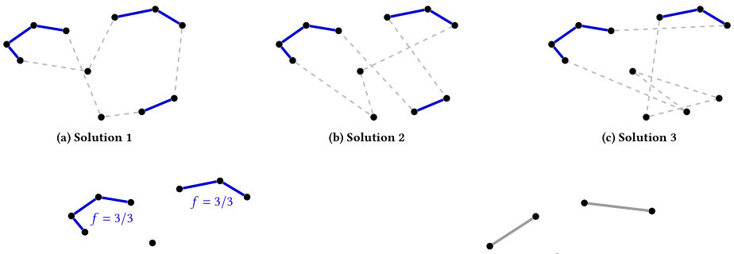
Summary. This paper introduces a hybrid algorithm that uses classical graph contraction to shrink large Traveling Salesperson Problems into smaller sub-problems suitable for quantum hardware. By identifying and fixing high-confidence edges, the method achieves significant dimensionality reduction while maintaining high solution accuracy. The approach was successfully validated using both Path Integral Monte Carlo simulations and physical D-Wave quantum annealers.
Why it may be interesting. not directly relevant
Main problem. Solving the NP-hard Traveling Salesperson Problem (TSP) on current NISQ-era quantum annealers by overcoming hardware limitations like low qubit count and sparse connectivity.
Main result. The proposed hybrid algorithm achieves high-quality solutions with low optimality gaps (below 4% for large instances) and significantly reduces problem size via graph contraction, outperforming the D-Wave BQM Hybrid Solver on physical hardware.
Method. A hybrid approach combining classical graph contraction (based on edge frequency analysis from a solution pool) with a quantum annealing step implemented via Path Integral Monte Carlo (PIMC) and tested on D-Wave hardware.
Model / system. The TSP is mapped to a Quadratic Unconstrained Binary Optimization (QUBO) framework and an Ising-like spin system using a time-dependent Hamiltonian that interpolates between an initial and a problem Hamiltonian.
Key observables. Optimality gap, execution time, and compression rate.
Important parameters / regimes. Confidence threshold (tau), initial pool size (NI), sample size (NS), and Lagrange multipliers (lambda1, lambda2).
Assumptions / limitations. The algorithm assumes that a subset of edges can be reliably identified as 'fixed' based on a frequency threshold to reduce dimensionality without losing the global optimum.
Figures summary. Figure 1 illustrates the workflow of the graph contraction process, showing sample TSP solutions, edge frequency highlighting, and the thresholding mechanism.
Paper structure. The paper identifies the connectivity bottleneck in quantum annealing, proposes a hybrid graph contraction technique, details the QUBO formulation and PIMC simulation, and validates the approach through comparative benchmarks against classical solvers and D-Wave hardware.
Hybrid quantum-classical algorithms can help mitigating the physical limitations of current quantum devices, particularly the low qubit count and the reduced topological connectivity. In this paper, we propose a hybrid technique to solve a well-known NP-hard optimization problem: the Traveling Salesperson Problem (TSP). Our approach is based on a graph contraction technique that removes most of the dimensionality of the original problem instance, producing a sub-TSP of a size suitable to be efficiently solved by a quantum device. The performance of our approach is first demonstrated on classical quantum simulation using Path Integral Monte Carlo, and then run on a D-Wave quantum annealer.
Authors: M. Arrayás, J. L. Trueba, C. Uriarte, J. Clothier, C. C. E. Elmy, R. Schanen, D. E. Zmeev, Š. Midlik
Type: experiment · Category: other · PDF: https://arxiv.org/pdf/2605.09632v1
Analysis basis: abstract only; PDF text extraction failed or PDF unavailable
Topic relevance: quantum measurements 2/5
Summary. The authors report a superconducting levitating oscillator with an unprecedentedly low resonance linewidth of less than 0.8 uHz. This ultra-low dissipation setup allows for extremely long ring-down times, making it a powerful tool for testing fundamental quantum-to-classical transition theories. The device's sensitivity is demonstrated through the detection of femtonewton-scale forces in superfluid helium.
Why it may be interesting. This work provides a high-precision experimental platform for studying open quantum systems, decoherence, and the limits of quantum mechanics in the macroscopic regime.
Main problem. The need for extremely isolated, closed-system macroscopic oscillators to test the interface between quantum and classical physics, such as wavefunction collapse and quantum gravity.
Main result. The development of a milligram-mass superconducting oscillator at millikelvin temperatures with an ultra-low resonance linewidth of less than 0.8 uHz and a ring-down time exceeding 110 hours.
Method. The researchers built a cryogenic levitated superconducting oscillator and demonstrated its sensitivity by measuring femtonewton-scale drag forces from 3He impurities in superfluid 4He.
Model / system. A milligram-mass superconducting oscillator operating in a cryogenic environment at millikelvin temperatures, designed to approximate a closed system.
Key observables. Resonance linewidth, oscillator ring-down time, and drag force from 3He impurities.
Important parameters / regimes. Resonance linewidth < 0.8 uHz, ring-down time > 110 hours, mass in the milligram range, drag force in the femtonewton range.
Paper structure. The paper introduces the motivation for isolated macroscopic systems, describes the construction and performance of the superconducting oscillator, and demonstrates its utility via drag force measurements.
Experiments aimed at quantifying the interface between quantum and classical physics necessarily require a high degree of isolation from the environment: wavefunction collapse and quantum gravity effects at laboratory scales are predicted to be very subtle. Ideally, such tests would be performed in a closed system at extremely low temperatures in order to rule out any external influence and thermal fluctuations. Cryogenic levitated macroscopic bodies are excellent candidates for an accurate laboratory approximation of such systems, as a tether to another body would violate the requirement for the system to be fully closed. Here we report a significant milestone on the way to a practically suitable approximation of such closed system. We have built a milligram-mass superconducting oscillator operating at millikelvin temperatures showing extremely low dissipation rate, with the oscillator ring-down time exceeding 110 hours. This corresponds to the resonance linewidth of less than 0.8 $μ$Hz. The experimental setup is highly tunable and is compatible with adiabatic nuclear demagnetisation, promising even lower temperatures and lower dissipation levels in the future. We demonstrate the capability of our device by measuring drag from $^3$He impurities in superfluid $^4$He at a level of $\sim10^{-8}$ with the drag force in the femtonewton range.
Authors: Wen-Zhang Wang, Jin-Ting Li, Dan-Fang Zhang, Wei-Hao Xu, Jia-Yi Wei, Jia-Qi Zhong, Biao Tang, Lin Zhou, Run-Bing Li, Xi Chen, Jin-Wang, Ming-Sheng Zhan
Type: both · Category: other · PDF: https://arxiv.org/pdf/2605.10324v1
Analysis basis: abstract only; PDF text extraction failed or PDF unavailable
Topic relevance: quantum measurements 2/5
Summary. This paper identifies amplitude modulation noise as a primary source of error in dynamic atom gravimeters. By fitting this noise to the kinematic parameters of the atomic cloud, the authors significantly improve the precision of gravity measurements. The method is also applicable to other atom interferometer-based sensors like gyroscopes and gradiometers.
Why it may be interesting. This is relevant for AMO physicists working on atom interferometry and precision sensing, as it provides a practical technique for noise mitigation in non-inertial frames.
Main problem. The performance of dynamic atom gravimeters on moving platforms is severely degraded by amplitude modulation noise (AMN) caused by variations in the cold atomic cloud's trajectory and velocity.
Main result. The researchers successfully suppressed AMN from 0.11 to 0.038, improving fringe phase resolution from 0.244 rad to 0.092 rad and reducing gravity measurement noise from 2.69 mGal to 1.68 mGal.
Method. The authors developed a model to illustrate AMN origins and proposed a method to fit the normalized AMN relative to the kinematic parameters of the cold atomic cloud.
Model / system. The system is a dynamic atom gravimeter utilizing a cold atomic cloud as the sensing medium, subject to complex dynamic environments and kinematic variations.
Key observables. Fringe phase resolution and dynamic gravity measurement noise (mGal).
Important parameters / regimes. Amplitude modulation noise (AMN) levels, trajectory and velocity variations of the atomic cloud, and kinematic parameters.
Paper structure. The paper identifies a noise source (AMN), builds a physical model of its origin, proposes a fitting-based suppression method, and demonstrates experimental validation through improved precision metrics.
Dynamic atom gravimeters enable absolute gravity measurements on moving platforms. However, their performance is severely degraded due to the complex dynamic environment. This paper finds that the amplitude modulation noise (AMN) is a key factor contributing to the degradation of gravity measurement performance. We find that the AMN is induced by the cold atomic cloud trajectory and velocity variation. We build a model to illustrate the principles and magnitude of AMN arising from various experiment processes. Then we propose a method to fit the normalized AMN respect to the kinematic parameters of the cold atomic cloud, and successfully suppress this noise from 0.11 to 0.038 using the fitting result. With this method, we improve the fringe phase resolution from 0.244 rad to 0.092 rad, and reduce the dynamic gravity measurement noise from 2.69 mGal to 1.68 mGal. This study finds and suppresses a key noise source for the dynamic atom gravimeters, which is important for further improving its precision. The proposed method can be also applied for precision enhancement for other dynamic atom interferometer-based sensors, such as the atom gradiometers and gyroscopes.
Authors: Nafiz Ishtiaque, Shanto Chakroborty
Type: theory · Category: quantum information and computing · PDF: https://arxiv.org/pdf/2605.09122v1
Analysis basis: abstract only; PDF text extraction failed or PDF unavailable
Topic relevance: entanglement & information structure 2/5
Summary. This paper provides a rigorous mathematical framework for studying the thermal stability of topological quantum error-correcting codes. By mapping the codes to a spacetime polymer gas, the authors prove that under certain conditions, logical errors are exponentially suppressed. The work also establishes a deep duality between different types of topological charges and theories.
Why it may be interesting. not directly relevant
Main problem. Understanding the stability and phase properties of Z_N homological quantum codes at finite temperature.
Main result. The authors establish an exact spacetime polymer gas representation for these codes and derive a low-activity criterion that ensures the exponential suppression of homologically nontrivial defects, preserving code stability.
Method. The study uses a finite-Trotter quantum-to-classical mapping to a (d+1)-dimensional spacetime model and employs a polymer expansion technique bounded by hard-core majorant gases.
Model / system. Finite-temperature P-form Z_N homological quantum codes mapped to a (d+1)-dimensional spacetime model with electric and magnetic topological background charges.
Key observables. Partition functions, electric and magnetic defect polymers, Wilson and 't Hooft operators, and the spacetime systole.
Important parameters / regimes. Temperature (via Trotter mapping), activity of the polymer gas, and the prime nature of N.
Assumptions / limitations. The derivation of the low-activity criterion assumes a regime where the polymer gas can be effectively bounded by positive same-species hard-core majorant gases.
Paper structure. The paper introduces the quantum-to-classical mapping, develops the polymer gas reformulation, establishes the low-activity stability criterion, derives the higher-form Kramers-Wannier duality, and concludes with a specialization to gauge-theory coupled to the random-cluster model.
We study finite-temperature $P$-form $\mathbb Z_N$ homological codes via an exact finite-Trotter quantum-to-classical map to a $(d+1)$-dimensional spacetime model with electric and magnetic topological background charges. The resulting background-resolved partition functions admit an exact reformulation in terms of closed magnetic and electric defect polymers, with opposite-species interactions governed by linking phases. By bounding this complex polymer gas by positive same-species hard-core majorant gases, we obtain an explicit low-activity criterion under which all background-dependent partition functions are uniformly controlled and homologically nontrivial polymers are exponentially suppressed on the scale of the spacetime systole. We also derive an exact higher-form Kramers-Wannier duality exchanging electric and magnetic backgrounds, Wilson and 't Hooft operators, and $P$-form and $(d-P)$-form theories. Finally, for prime $N$, we identify an exact source-free gauge-theory specialization coupled to the plaquette random-cluster model, which imports sharp phase-transition results on special geometries into the spacetime framework.
Authors: Tsz Hin Hui, Xiaodan Xia, Pedro D. Sacramento, Wing Chi Yu
Type: theory · Category: statistical mechanics · PDF: https://arxiv.org/pdf/2605.10320v1
Analysis basis: abstract only; PDF text extraction failed or PDF unavailable
Topic relevance: entanglement & information structure 2/5
Summary. The paper introduces a new method to create order parameters by analyzing the patterns in the most significant Fock states of a system's ground state. This approach successfully identifies hidden phases in the SSH model that standard topological invariants miss and provides a practical way to detect BKT transitions. It offers a versatile tool for mapping out complex phase diagrams in various quantum many-body systems.
Why it may be interesting. This is interesting for many-body dynamics researchers because it provides a new, robust tool for characterizing phase transitions and identifying hidden phase structures in both interacting and non-interacting systems.
Main problem. The paper addresses the limitation of traditional non-local topological invariants in fully distinguishing all phases in certain many-body systems and seeks a more refined classification method.
Main result. The authors develop a real-space order parameter scheme based on dominant Fock-state patterns that can reveal hidden sub-structures in topological sectors and provide a finite-size diagnostic for BKT transitions.
Method. A general scheme for constructing order parameters by extracting generic patterns from the dominant Fock states of many-body ground states.
Model / system. The framework is demonstrated on the extended Su-Schrieffer-Heeger (SSH) model and the interacting spin-1/2 XXZ model.
Key observables. Real-space order parameters derived from Fock-state patterns and the standard winding number.
Paper structure. The paper introduces a new order parameter construction method, applies it to the extended SSH model to show refined phase classification, demonstrates its robustness in disordered systems, and applies it to the XXZ model for BKT transition diagnostics.
We introduce a general scheme for constructing order parameters (OPs) by extracting generic patterns from the dominant Fock states of many-body ground states. While topological phases are traditionally characterized by non-local invariants, we demonstrate that our real-space OPs provide a more refined classification. In the extended Su-Schrieffer-Heeger model, we show that the standard winding number is insufficient to fully distinguish all phases; our OPs reveal a hidden sub-structure where each topological sector splits into two distinct phases. Beyond identifying the phase boundaries, these OPs quantify the depth of a phase, and remain robust in characterizing transitions in disordered systems. Furthermore, our approach provides a practical finite-size diagnostic for the Berezinskii-Kosterlitz-Thouless transition in the interacting spin-1/2 XXZ model. The presented framework offers a broadly applicable tool for uncovering the phase diagrams of diverse interacting and non-interacting quantum many-body systems.
Authors: Bautista Arenaza, Sebastián Risau-Gusman, Inés Samengo, Damián G. Hernández
Type: theory · Category: statistical mechanics · PDF: https://arxiv.org/pdf/2605.08967v1
Analysis basis: abstract only; PDF text extraction failed or PDF unavailable
Topic relevance: entanglement & information structure 2/5
Summary. This paper demonstrates that imposing entropy constraints on high-dimensional probability spaces leads to a phase transition characterized by condensation. In this state, one component dominates the distribution, providing a theoretical basis for the emergence of sparsity in complex systems like machine learning and ecology.
Why it may be interesting. not directly relevant
Main problem. The study investigates the organization and phase behavior of high-dimensional probability distributions constrained by a fixed Shannon entropy.
Main result. A condensation phase transition is identified below a critical entropy threshold, where a single component captures a macroscopic fraction of the probability mass.
Method. The authors employ a discretization strategy to assign equal statistical weight to microstate distributions, enabling a combinatorial analysis of the probability simplex.
Model / system. The system consists of probability distributions populating the level surfaces of the probability simplex (Delta_{K-1}) under a fixed Shannon entropy constraint.
Key observables. Shannon entropy, probability mass distribution, and the presence of a condensed component versus a fluid background.
Important parameters / regimes. The critical entropy threshold H_c, which scales as log K - 1 + gamma in the thermodynamic limit, and the dimension K.
Assumptions / limitations. The analysis assumes a thermodynamic limit and utilizes a discretization strategy to facilitate combinatorial counting.
Paper structure. The paper introduces the problem of entropy-constrained probability spaces, presents a discretization method for combinatorial analysis, identifies the critical entropy for condensation, and discusses implications for machine learning and ecology.
The organization of high-dimensional probability spaces is a fundamental problem at the intersection of statistical physics and information theory. Here, we analyze the distributions populating level surfaces of the probability simplex $Δ_{K-1}$ defined by a fixed Shannon entropy. We introduce a discretization strategy that assigns equal statistical weight to distinct microstate distributions and enables a combinatorial analysis of the simplex. A condensation phase transition is shown to take place below a critical entropy that scales as $H_c \simeq \log K - 1 + γ$ in the thermodynamic limit. For entropy values $H_0 < H_c$, the overwhelming majority of distributions are found in a condensed state, in which a single component captures a macroscopic fraction of the total probability mass while the remaining components form a homogeneous fluid background. These results provide a framework for understanding phenomena such as overconfident predictions in machine learning and the emergence of dominant species in ecology, and suggest that sparsity can arise naturally from entropic constraints in high-dimensional manifolds.
Authors: Feliciano Giuseppe Pacifico, Duccio Fanelli, Lorenzo Buffoni, Lorenzo Chicchi, Diego Febbe, Raffaele Marino
Type: theory · Category: disordered systems and neural networks · PDF: https://arxiv.org/pdf/2605.10613v1
Analysis basis: abstract only; PDF text extraction failed or PDF unavailable
Topic relevance: methods for driven-dissipative 2/5
Summary. This paper presents a way to force Neural-ODEs to have specific fixed points by design. This allows researchers to bake known physical symmetries or steady-state properties into machine learning models while ensuring the models remain powerful enough to learn arbitrary dynamics.
Why it may be interesting. not directly relevant
Main problem. How to constrain Neural Ordinary Differential Equations (Neural-ODEs) to respect pre-defined fixed points in the velocity field without sacrificing the model's universal approximation capabilities.
Main result. The authors provide a recipe to explicitly plant fixed points into Neural-ODEs and rigorously prove that the model retains its universality under these local constraints.
Method. A technique is introduced to modify the Neural-ODE architecture such that the velocity field is exactly zero at a finite collection of prescribed points, using a computationally convenient implementation.
Model / system. The method is validated using two paradigmatic physical models, though the specific physical systems are not detailed in the abstract.
Assumptions / limitations. The method assumes a finite collection of points in the reference multi-dimensional space where the velocity field is zero.
Paper structure. The paper introduces a new technique for Neural-ODEs, provides a mathematical recipe for imposing fixed points, presents a rigorous proof of universality, and demonstrates the method on physical models.
We introduce a technique that enables Neural-ODEs to approximate arbitrary velocity fields with a priori planted fixed-points. Specifically, a recipe is given to explicitly accommodate for a finite collection of points in the reference multi-dimensional space of the Neural-ODE where the velocity field is exactly equal to zero. In this way, the gradient-based training is rigorously constrained inside the prescribed hypothesis class while leaving the expressive power of the Neural-ODE unaltered. We rigorously prove the universality of the Neural-ODE under any local constraints in the velocity field and give a computationally convenient way of imposing the fixed points. Our method is then tested on two paradigmatic physical models.
Authors: Pieter Naaijkens, David Penneys, Daniel Wallick
Type: theory · Category: strongly correlated electrons · PDF: https://arxiv.org/pdf/2605.10693v1
Analysis basis: abstract only; PDF text extraction failed or PDF unavailable
Topic relevance: entanglement & information structure 2/5
Summary. This paper extends the mathematical framework for local topological order by introducing axioms that guarantee Haag duality and reflection positivity. It provides an independent proof of Haag duality for Levin-Wen models and shows these properties are universal for known commuting projector models. This strengthens the algebraic foundation for studying topological phases in quantum spin systems.
Why it may be interesting. not directly relevant
Main problem. The paper aims to extend the axiomatic framework of local topological order (LTO) to include properties like Haag duality and reflection positivity.
Main result. The authors introduce new LTO axioms that ensure Haag duality for cone-like regions and reflection positivity under Z2-reflection symmetry, proving these axioms hold for all known topologically ordered commuting projector models.
Method. The study utilizes the framework of algebraic quantum field theory, specifically Tomita-Takesaki theory and boundary algebra constructions, applied to abstract quantum spin systems.
Model / system. The paper focuses on abstract quantum spin systems, specifically topologically ordered commuting projector models such as the Levin-Wen string net models.
Assumptions / limitations. The results are applied to the class of all known topologically ordered commuting projector models.
Paper structure. The paper builds on previous LTO axioms to introduce new axioms for Haag duality and reflection positivity, followed by proofs of their validity for known commuting projector models.
In our previous article [arXiv:2307.12552], we introduced local topological order (LTO) axioms for abstract quantum spin systems which allow one to access topological order via a boundary algebra construction. Using the LTO axioms, we produced a canonical pure state on the quasi-local algebra, which gives a net of von Neumann algebras associated to a poset of cones in $\mathbb{R}^n$. In this article, motivated by [arXiv:2509.23734], we introduce an axiom for LTOs which ensures Haag duality for cone-like regions using Tomita-Takesaki theory. We prove this axiom is satisfied for all known topologically ordered commuting projector models. We thus get an independent proof of Haag duality for the Levin-Wen string net models originally proved in [arXiv:2509.23734]. We also give a reflection positivity axiom for LTOs, connecting to the recent article [arXiv:2510.20662]. We again prove this axiom is satisfied for all known topologically ordered commuting projector models about some $\mathbb{Z}/2$-reflection symmetry.
Authors: Mads Brøndum Carlsen, Lars Bojer Madsen
Type: theory · Category: other · PDF: https://arxiv.org/pdf/2605.10126v1
Analysis basis: abstract only; PDF text extraction failed or PDF unavailable
Topic relevance: non-equilibrium dynamics 2/5
Summary. This paper provides a new 3D quantum scattering theory for electron wave packets interacting with oscillating potentials. It bridges the gap between high-energy approximations and the low-energy requirements of modern ultrafast electron microscopy by accounting for wave packet geometry and recoil. The results show that the efficiency of electron modulation is significantly influenced by the transverse focusing of the electron beam.
Why it may be interesting. not directly relevant
Main problem. Developing a rigorous 3D quantum scattering framework for electron wave packets interacting with time-periodic potentials, specifically addressing the need for low-energy models that account for finite wave packet geometry and recoil effects.
Main result. The authors establish a 3D scattering theory that connects time-dependent modulation to time-independent multi-channel scattering, demonstrating that modulation strength is sensitive to the transverse focusing of the electron pulse.
Method. The study employs an extended Floquet space mapping, an exact R-matrix approach, and a multi-channel eikonal approximation to evaluate scattering amplitudes.
Model / system. The system consists of free electron wave packets interacting with time-harmonic (periodic) potentials, such as those found in optical near-fields during photon-induced near-field electron microscopy (PINEM).
Key observables. Scattering amplitudes, energy sidebands, and PINEM-like probabilities weighted by the transverse profile.
Important parameters / regimes. Low kinetic energy regime, time-periodic potential frequency, and transverse wave packet geometry/focusing.
Assumptions / limitations. The interaction is modeled via time-periodic potentials; the eikonal approximation is used as an analytical comparison to the exact R-matrix approach.
Paper structure. The paper introduces the problem of low-energy electron modulation, develops a 3D quantum scattering theory using Floquet space, evaluates the theory via R-matrix and eikonal methods, and applies it to an oscillating potential to show energy sideband generation.
The coherent interaction between free electrons and optical near-fields enables the active modulation of electron wave packets, a mechanism central to photon-induced near-field electron microscopy (PINEM). While existing theories effectively describe these interactions at high kinetic energies, the growing interest in low-energy ultrafast electron microscopy demands frameworks that explicitly account for finite wave packet geometries and recoil effects. In this paper, we develop a rigorous 3D quantum scattering theory for electron wave packets interacting with time-periodic potentials, capturing the case of optical near-field interaction. By mapping the time-dependent dynamics into an extended Floquet space, we formally connect the modulation process to time-independent multi-channel scattering. We evaluate the resulting scattering amplitudes using both an exact R-matrix approach and a multi-channel eikonal approximation. The latter analytical approach recovers PINEM-like probabilities weighted by the wave packet's transverse profile. Application of the theory to an oscillating potential demonstrates the generation of distinct energy sidebands, revealing that the modulation strength is sensitive to the transverse focusing of the incident electron pulse, underlining the importance of a fully 3D treatment.
Authors: Vahid R. Asadi, Atsuya Hasegawa, François Le Gall
Type: theory · Category: quantum information and computing · PDF: https://arxiv.org/pdf/2605.09872v1
Analysis basis: full PDF text, analyzed in chunks
Topic relevance: entanglement & information structure 2/5
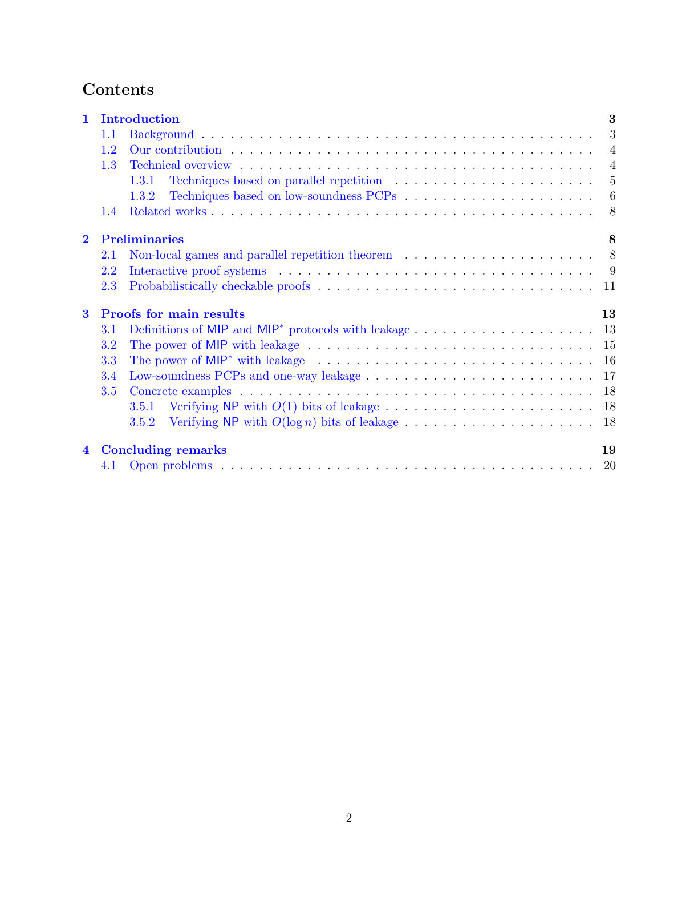
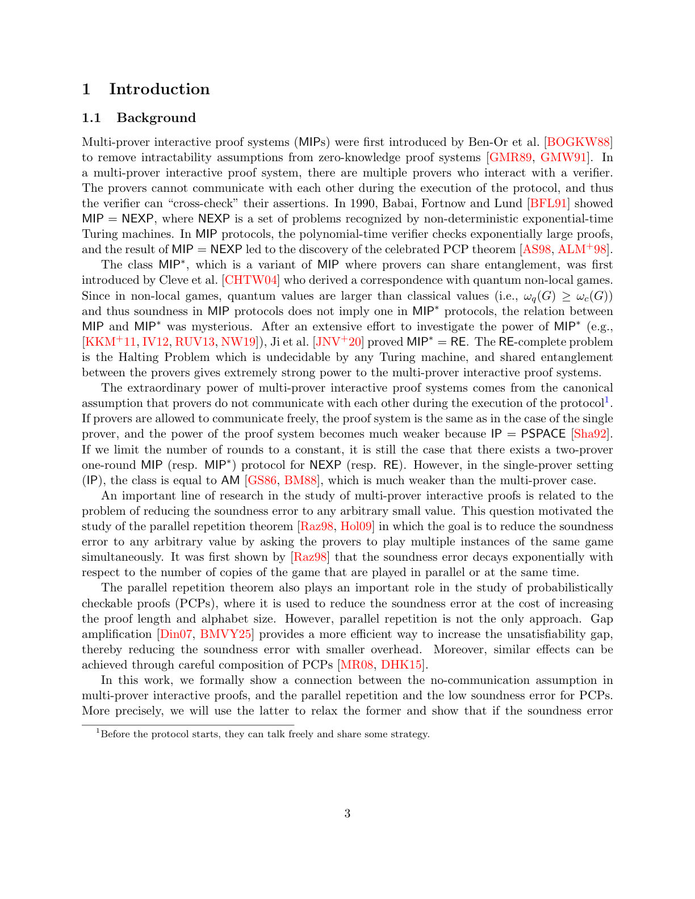
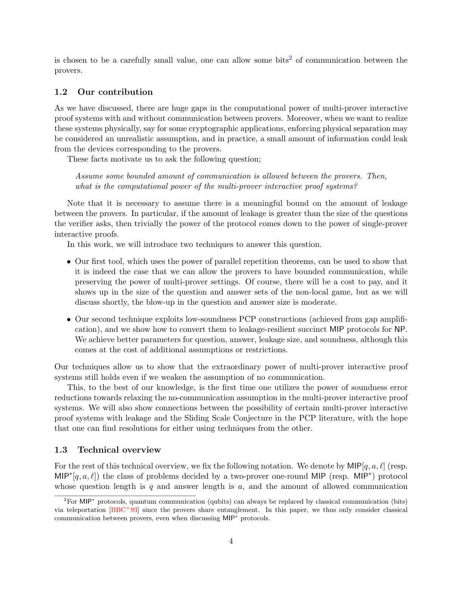
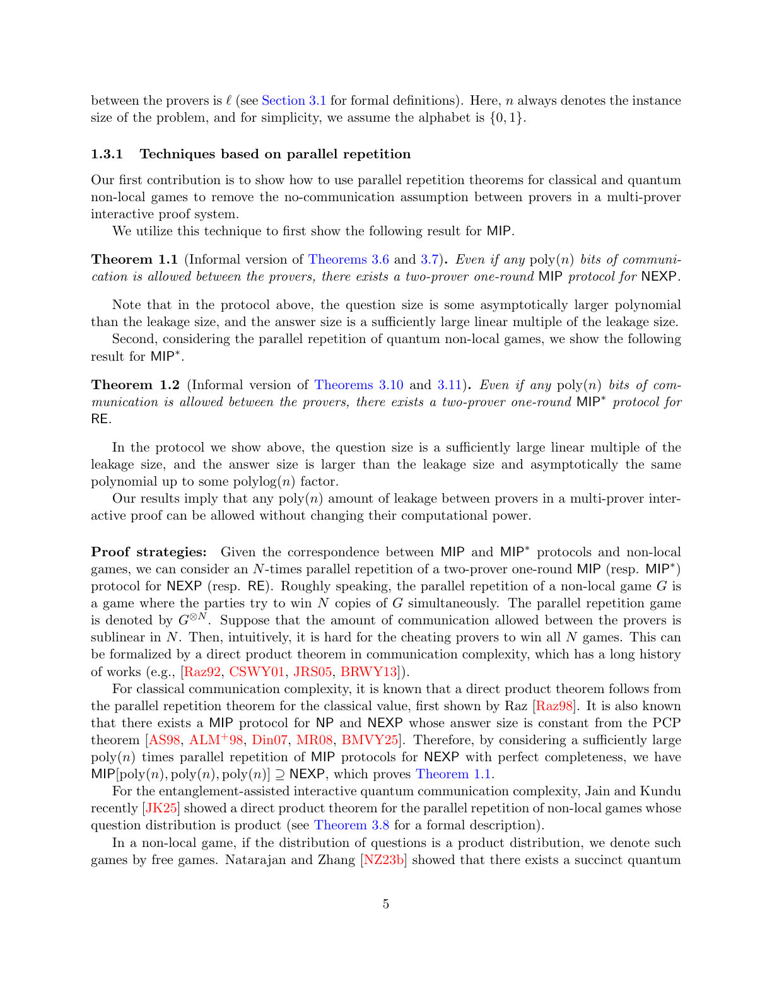
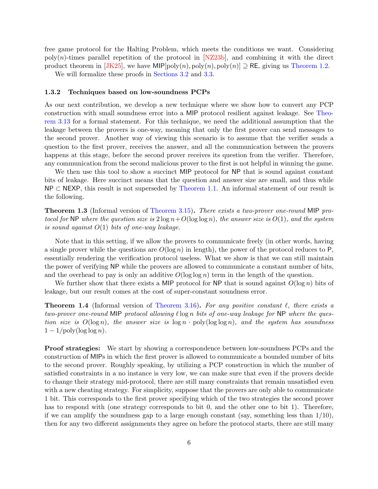
Summary. This paper demonstrates that multi-prover interactive proof systems are surprisingly robust, maintaining their massive computational power even when provers are allowed to exchange a polynomial amount of information. This provides a theoretical foundation for understanding the limits of communication-restricted quantum protocols.
Why it may be interesting. not directly relevant
Main problem. The paper investigates whether the computational power of multi-prover interactive proof systems (MIP and MIP*) remains robust when the standard 'no-communication' assumption is relaxed to allow a bounded amount of information leakage between provers.
Main result. The authors prove that the extraordinary power of these systems (NEXP for MIP and RE for MIP*) is preserved even with polynomial amounts of communication leakage, and they provide specific constructions for NP-verifiable protocols resilient to constant and logarithmic leakage.
Method. The research utilizes parallel repetition theorems for classical and quantum non-local games, as well as techniques to convert low-soundness Probabilistically Checkable Proof (PCP) constructions into leakage-resilient MIP protocols.
Model / system. The model consists of a verifier interacting with multiple provers (MIP) or provers sharing quantum entanglement (MIP*), where the provers are permitted a bounded amount of classical communication (leakage) during the protocol.
Important parameters / regimes. The amount of leakage (constant, logarithmic, or polynomial in $n$), question and answer sizes, and the soundness error of the protocols.
Assumptions / limitations. The second technique for NP robustness assumes one-way leakage; the effectiveness of certain results depends on the availability of specific PCP constructions; and the results for RE do not yet extend to the quantum PCP conjecture.
Paper structure. The paper introduces the leakage model, presents two main techniques (parallel repetition and PCP conversion), proves theorems regarding the preservation of NEXP and RE complexity classes, discusses NP-specific robustness, and establishes connections to the Sliding Scale Conjecture.
It is known that there exist multi-prover interactive protocols ($\mathsf{MIP}$ protocols) for the complexity class $\mathsf{NEXP}$, succinct $\mathsf{MIP}$ protocols for $\mathsf{NP}$ and multi-prover interactive protocols with shared entanglement ($\mathsf{MIP}^\ast$ protocols) for $\mathsf{RE}$. This extraordinary power of multi-prover interactive proof systems comes from the assumption that provers do not communicate with each other during the protocols. If they are allowed to communicate freely, the setting is the same as in the single-prover case, and the computational power of the system becomes significantly weaker. In this paper, we investigate for the first time the setting where communication (i.e., leakage of information) between provers is allowed but bounded. We introduce two techniques to approach this question and show that multi-prover interactive proof systems are robust against some amount of leakage. Our first technique is based on parallel repetition theorems. We apply it to show that for any polynomial $p$, we can construct two-prover one-round $\mathsf{MIP}$ and $\mathsf{MIP}^\ast$ protocols for $\mathsf{NEXP}$ and $\mathsf{RE}$, respectively, that are robust against $p(n)$ bits of leakage. We further derive our second technique to convert any low-soundness PCP construction to a two-prover one-round $\mathsf{MIP}$ protocol for $\mathsf{NP}$ robust against leakage. We also discuss the relation between robustness against leakage in multi-prover interactive proof systems and the Sliding Scale Conjecture in the PCP literature.
Authors: Jeongho Bang, Marcin Pawłowski
Type: theory · Category: disordered systems and neural networks · PDF: https://arxiv.org/pdf/2605.09316v1
Analysis basis: full PDF text, analyzed in chunks
Topic relevance: entanglement & information structure 2/5
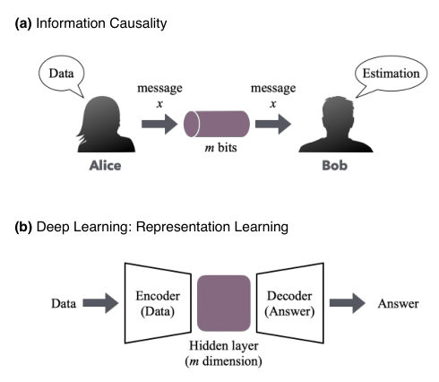
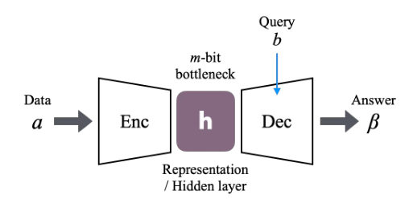
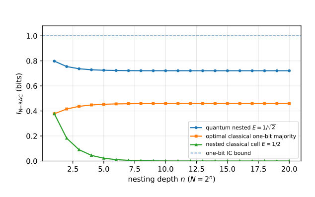
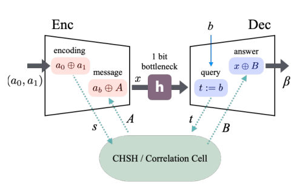
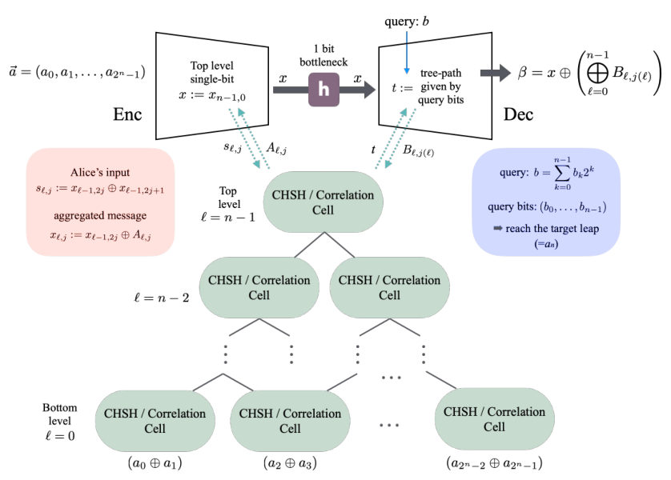
Summary. This paper introduces a theoretical framework to treat neural network bottlenecks as communication channels subject to information-theoretic constraints. It demonstrates that the fundamental limits of quantum correlations, such as the Tsirelson bound, are directly linked to the stability of information retrieval in deep, query-separated architectures. This provides a new diagnostic tool for detecting information leakage in machine learning models.
Why it may be interesting. not directly relevant
Main problem. The paper seeks to formalize a framework called Neural Information Causality (Neural-IC) to bridge the gap between the Information Causality principle in quantum theory and representation learning in query-separated neural architectures.
Main result. The authors prove that the Neural-IC score is upper-bounded by the bottleneck capacity and demonstrate that the Tsirelamson bound emerges as a necessary stability condition to prevent information leakage in nested correlation layers.
Method. The study employs information calculus, information-theoretic bounds (such as the chain rule and data processing inequality), and the construction of hierarchical 'pyramid' protocols using CHSH-type correlation cells.
Model / system. The model consists of a query-separated architecture (Neural-RAC) featuring an encoder (Alice), a bottleneck/interface (message), and a decoder (Bob), utilizing shared classical or quantum resources like CHSH-type correlation layers.
Key observables. Neural-RAC information score (I_N-RAC), success probability (P_K), and correlation bias (E).
Important parameters / regimes. Interface capacity (C_H), number of bits (m), correlation bias (E), and the Tsirelson limit (E = 1/sqrt(2)).
Assumptions / limitations. The architecture is assumed to be query-separated (the representation is fixed before the query is known), and the CHSH cells in the nested protocol are assumed to be independent and isotropic.
Figures summary. Figure 1 compares IC/RAC communication games to deep learning architectures; Figure 2 illustrates the Neural-RAC bottleneck; Figure 5 shows the schematic of the recursive pyramid protocol; Figure 13 shows the interpolation of effective bias via a quantum knob.
Paper structure. The paper introduces the Neural-IC framework, establishes the embedding of information causality into representation learning, proves capacity-based bounds, analyzes nested protocols to derive the Tsirelson bound, and provides numerical verification via controlled simulations.
Query-separated computation forces a representation to play an operational role: data are encoded before a query is known, and a later decoder can answer only through the intermediate interface. In this regime the representation functions as a message rather than merely as a feature map. We formalize this observation by embedding information causality (IC) into representation learning, obtaining a framework called neural information causality (Neural-IC). The revised formulation separates two logically distinct statements. First, every query-separated architecture induces a random-access communication experiment and obeys the embedding inequality $I_{\mathrm{N\text{-}RAC}}\le I(\vec a:H,B)$. Second, any independently certified physical capacity bound on the interface, such as a hard $m$-bit alphabet, a finite-precision register, or a power-constrained noisy channel, implies $I_{\mathrm{N\text{-}RAC}}\le C_H$. This separation avoids treating capacity as a post hoc definition and makes Neural-IC an operational diagnostic for query leakage, precision leakage, and episode-specific memory. We also provide an exact one-bit classical RAC benchmark, showing explicitly that the relevant quantum enhancement is not total information beyond the bottleneck, but fair query-conditioned access. For CHSH-type correlation layers, nested Neural-RAC protocols multiply correlation biases across depth; requiring stability of a one-bit bottleneck for arbitrary depth selects the Tsirelson threshold. We extend the analysis to asymmetric seed biases, to multi-capacity finite-depth phase diagrams, and to correlated data via a conditional information score. Controlled simulations, including straight-through binary bottlenecks and deliberately leaky ablations, verify that apparent violations are accounted for by broken query separation or undercounted capacity.
Authors: Zvika Brakerski, Henry Yuen
Type: theory · Category: quantum information and computing · PDF: https://arxiv.org/pdf/2605.09957v1
Analysis basis: full PDF text, analyzed in chunks
Topic relevance: entanglement & information structure 2/5
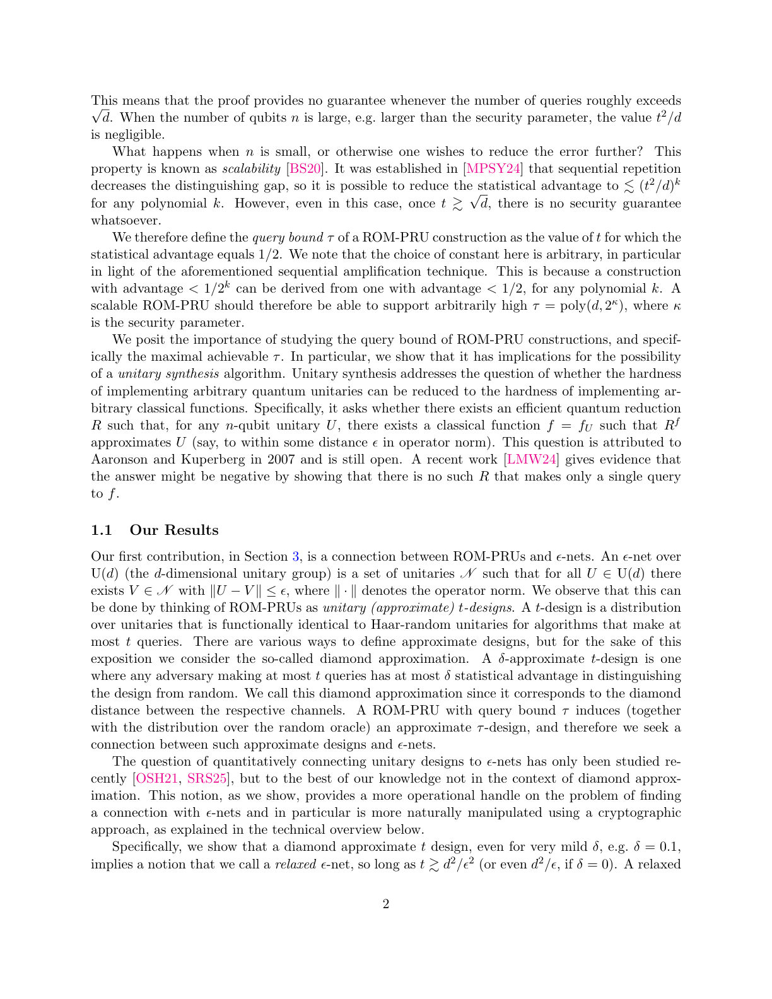
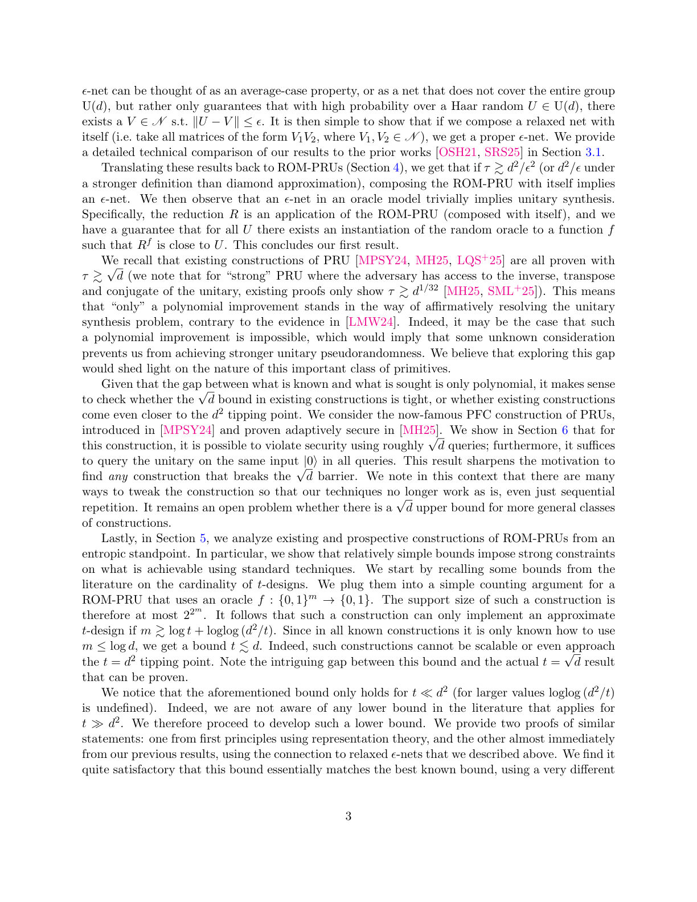
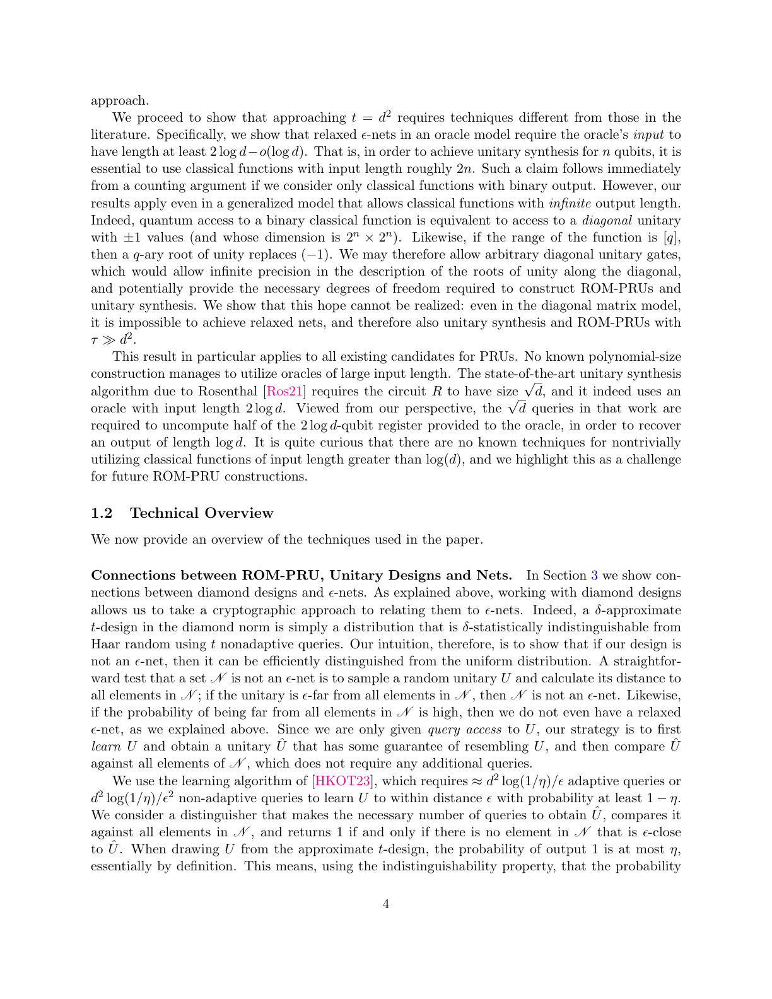
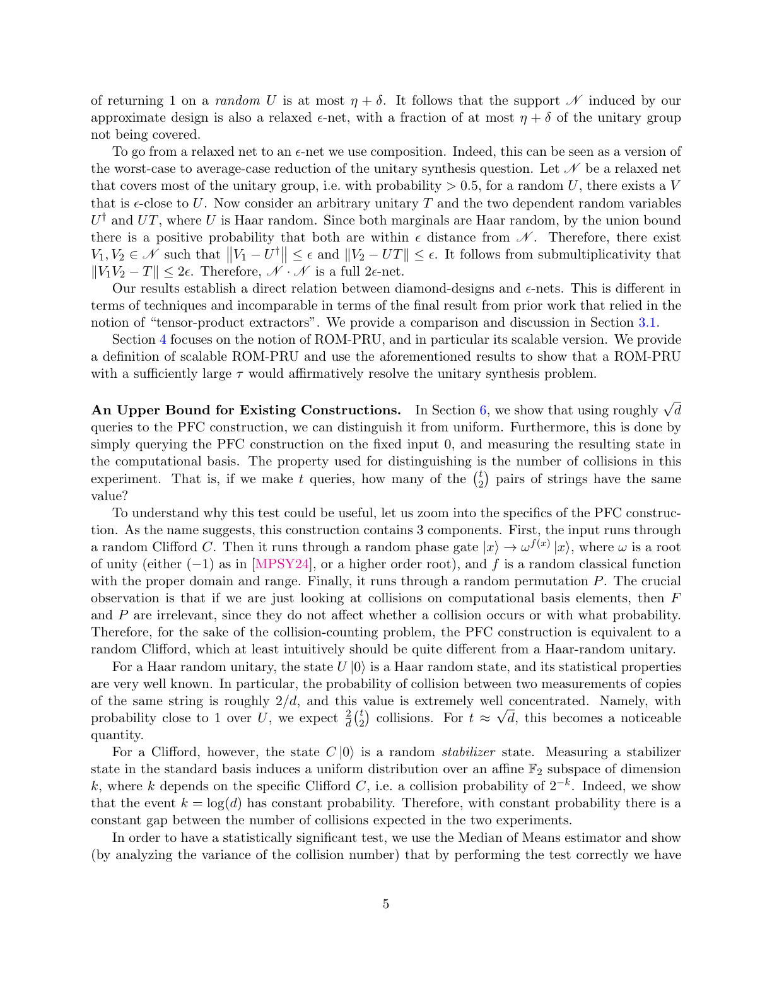
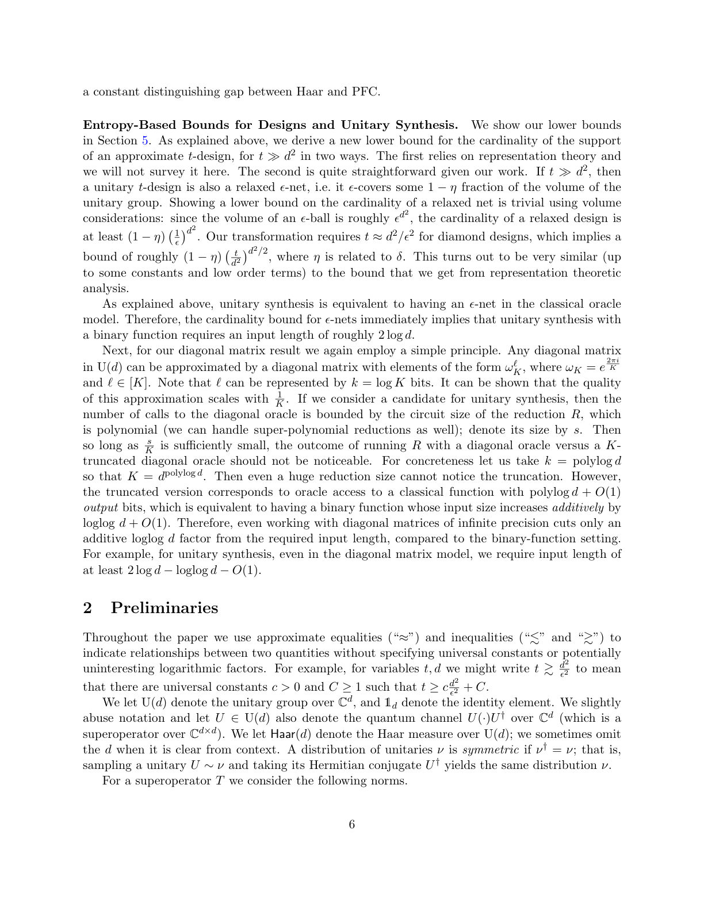
Summary. This paper proves that constructing scalable pseudorandom unitaries is as difficult as solving the long-standing unitary synthesis problem. By establishing new lower bounds on oracle complexity, the authors demonstrate that current methods for generating pseudorandom quantum operations cannot be scaled independently of the system dimension.
Why it may be interesting. not directly relevant
Main problem. The paper investigates whether scalable pseudorandom unitaries (PRUs) can be constructed and explores the connection between these constructions and the Aaronson-Kuperberg unitary synthesis problem.
Main result. The authors prove that any scalable ROM-PRU construction would solve the unitary synthesis problem, and they establish a lower bound on the required classical oracle input length, effectively ruling out all existing candidates for scalable PRUs.
Method. The work uses mathematical tools from representation theory, counting arguments, and the study of epsilon-nets and approximate unitary t-designs within the diamond norm framework.
Model / system. The study is set in the context of the unitary group U(d) acting on n = log d qubits, utilizing the Random Oracle Model (ROM) and a generalized diagonal matrix model to analyze classical oracles.
Key observables. Query complexity (t), security parameter (kappa), distinguishing advantage (delta), and collision probabilities in the computational basis.
Important parameters / regimes. Dimension (d), query bound (t), security parameter (kappa), error tolerance (epsilon), and oracle input length (m).
Assumptions / limitations. The analysis primarily focuses on the Random Oracle Model (ROM) for pseudorandom unitaries and assumes the validity of the diamond norm for defining approximate designs.
Paper structure. The paper first formalizes ROM-PRUs, then establishes the link between these unitaries and the unitary synthesis problem, followed by proofs regarding epsilon-nets, lower bounds on oracle complexity, and a specific analysis of the PFC construction's vulnerability.
We consider the task of constructing pseudorandom unitaries (PRUs) with scalable security, i.e. families in which the security parameter may vary independently of the dimension (or input bit-length). It is not known whether scalable PRUs can be constructed. In this work we show that if scalable PRUs can be constructed via the prevailing paradigm for analyzing PRUs, then there would be a positive solution to the Aaronson-Kuperberg unitary synthesis problem, a longstanding question in quantum complexity theory about whether implementing arbitrary unitaries can be efficiently reduced to computing a Boolean function. Specifically, we formalize the notion of ROM-PRUs, which are statistically secure PRUs in the random oracle model (ROM). All prior known constructions of cryptographically secure PRUs are based on a ROM-PRU construction. We prove novel connections between ROM-PRUs, approximate unitary designs, epsilon-nets over the unitary group, and the unitary synthesis problem. In particular, we prove that any unitary synthesis algorithm (and thus any ROM-PRU) must use a classical oracle with input length (2 - o(1)) log d bits, where d is the dimension of the unitary to be implemented. This bound rules out all existing candidates for scalable PRUs in the literature. Together, these connections indicate that ROM-PRUs provide a fruitful idealized model for studying pseudorandom unitaries.
Authors: Zeyu Chen, Junde Wu
Type: theory · Category: quantum information and computing · PDF: https://arxiv.org/pdf/2605.10682v1
Analysis basis: abstract only; PDF text extraction failed or PDF unavailable
Topic relevance: quantum measurements 2/5
Summary. This paper provides precise mathematical bounds on the resources required to classically simulate different types of quantum finite automata. By establishing these sharp simulation laws, it creates a clear hierarchy of quantum advantage for finite-state computational models.
Why it may be interesting. not directly relevant
Main problem. The paper aims to quantify the computational advantage of quantum finite automata over classical models by determining the exact probabilistic simulation cost under strict cutpoints.
Main result. The authors establish sharp simulation laws: a one-way finite automaton with c classical states and a q-dimensional quantum register has a cost of Theta(cq^2), while an n-dimensional measure-once one-way quantum finite automaton has a worst-case cost of Theta(n^2).
Method. The researchers utilize a prepare-test framework where prefixes generate real operator degrees of freedom and suffixes act as strict-cutpoint tests, alongside the use of finite sign-rank matrices and Forster's spectral method.
Model / system. The study focuses on models of quantum finite automata, specifically one-way finite automata with classical states and quantum registers, and n-dimensional measure-once one-way quantum finite automata.
Key observables. probabilistic simulation cost
Important parameters / regimes. number of classical states (c), dimension of the quantum register (q), dimension of the measure-once automaton (n), and strict cutpoints.
Assumptions / limitations. The analysis is conducted under the regime of strict cutpoints for decision-making.
Paper structure. The paper identifies a simulation cost measure, provides sharp simulation laws for two specific models, develops a prepare-test framework for proofs, and relates the results to finite sign-rank matrices and existing two-way separation hierarchies.
This paper identifies exact probabilistic simulation cost as the natural quantitative measure of quantum advantage for finite automata under strict cutpoints. It gives sharp simulation laws for two representative models. A one-way finite automaton with $c$ classical states and a $q$-dimensional quantum register has exact probabilistic simulation cost $Θ(cq^2)$, while an $n$-dimensional measure-once one-way quantum finite automaton has worst-case cost $Θ(n^2)$. The proofs develop a prepare--test framework, in which prefixes generate the relevant real operator degrees of freedom and suffixes convert them into strict-cutpoint tests. The same obstruction is recast through finite sign-rank matrices, clarifying the role of Forster's spectral method. Placed beside the surrounding two-way separations, these results give a clean hierarchy of finite-automata quantum advantage.
Authors: Nishad Manohar, Arshag Danageozian, Evangelia Takou, Edwin Barnes, Sophia E. Economou
Type: theory · Category: quantum information and computing · PDF: https://arxiv.org/pdf/2605.09325v1
Analysis basis: abstract only; PDF text extraction failed or PDF unavailable
Topic relevance: entanglement & information structure 2/5
Summary. This paper presents a new protocol to efficiently generate the resource states required for fusion-based quantum computing. By exploiting symmetries in the resource states, the authors significantly reduce the number of quantum emitters and gates needed. This approach addresses the primary bottleneck of low generation rates in photonic quantum computing.
Why it may be interesting. This is highly relevant for quantum optics and quantum information researchers as it provides a more efficient pathway for scalable photonic quantum computing using minimal hardware resources.
Main problem. The generation rate of resource states in fusion-based quantum computing (FBQC) is limited by the probabilistic nature of photonic fusion gates, and optimizing the number of emitters and gates for these states is an NP-hard problem.
Main result. By exploiting symmetries in FBQC resource states, the authors simplified the optimization problem and demonstrated that 24-photon logically encoded resource states can be produced using only 3 emitters and 11 CNOT gates.
Method. The authors utilize an optimization approach that leverages the inherent symmetries of FBQC resource states to bypass the computational complexity of searching all possible photon emission orderings.
Model / system. The system involves photonic resource states generated via quantum emitters and controlled-NOT (CNOT) gates for use in fusion-based quantum computing architectures.
Key observables. Number of quantum emitters required and the number of CNOT gates used in the generation protocol.
Important parameters / regimes. The number of photons in the resource state (e.g., 24-photon states) and the photon emission ordering.
Assumptions / limitations. The protocol assumes a deterministic generation of photonic resource states from emitters for a specified emission ordering.
Paper structure. The paper introduces the bottleneck of FBQC, discusses the complexity of previous optimization algorithms, presents a new symmetry-based optimization method, and concludes with specific results for 24-photon resource states.
Fusion-based quantum computing (FBQC) relies on a set of small, typically photonic, resource states that are fused together through Bell state measurements. The main bottleneck of FBQC is the low rate of generating the resource states, which stems from the probabilistic nature of photonic fusion gates. Previous work introduced a general algorithm for constructing circuits that deterministically generate photonic resource states from a minimal number of quantum emitters for a specified photon emission ordering. However, finding the minimal number of emitters and CNOT gates across all possible orderings is an NP-hard problem. Here, we exploit the symmetries present in FBQC resource states to dramatically simplify this optimization problem. We find that logically encoded 24-photon FBQC resource states can be produced using as few as 3 emitters and 11 CNOTs.
← Index · ← Previous · Next →